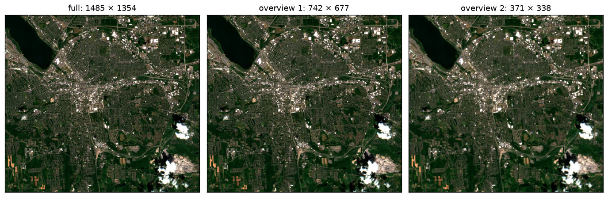
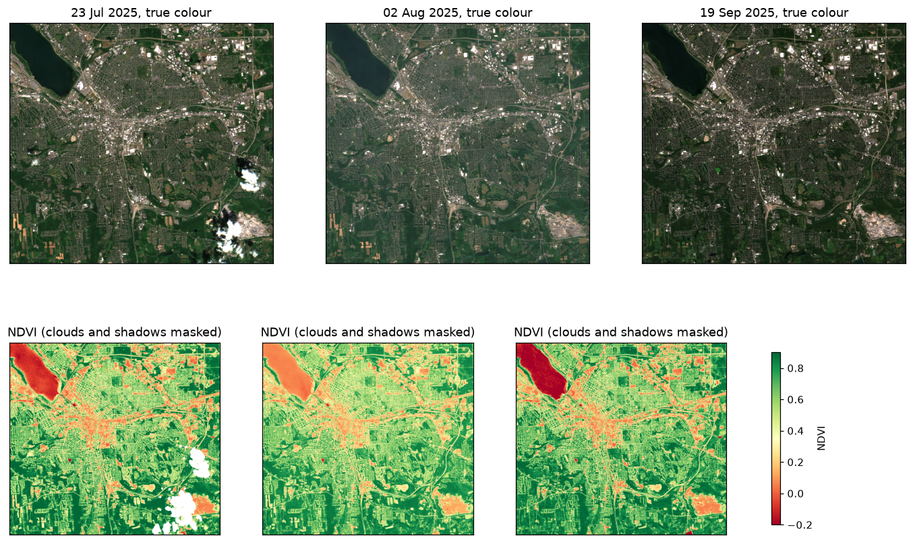

Notebook 08_00 showed that a cloud-optimized file lets a program read a small part of a large remote raster. This notebook is about producing and managing such files. We download Sentinel-2 imagery of Syracuse with geolattice.rsense.get_images, check whether the files are cloud-optimized, convert them to Cloud-Optimized GeoTIFFs (COGs) and compare compression settings, look inside a COG, build a multi-date Zarr data cube, and publish the products in a STAC catalogue whose footprints are also stored as GeoParquet.
Learning objectives
Download clipped imagery with get_images and read its STAC metadata (scale and offset).
Check files with validate_cog and explain each rule of the COG layout.
Convert rasters with to_cog and choose compression, predictor and block size.
Make a web-optimized COG aligned with the XYZ tile grid.
Confirm that a clip read from the cloud is identical to the remote file.
Build, append to and lazily read a Zarr data cube.
Publish products as a STAC catalogue and index its footprints in GeoParquet.
Data
Data
Source
Sentinel-2 L2A, tile 18TVN, red/green/blue/NIR (10 m) and scene classification (20 m), clearest scene of July, August and September 2025 over Syracuse, NY
Downloaded with get_images from Earth Search (AWS) into Data/00_shared/data_web_cloud_gis/s2_syracuse_2025/
Onondaga County boundary
Data/00_shared/vector_data/USA/NY_County_GCS.shp
Contents
Setup
Getting imagery with get_images
Is it cloud-optimized?
Converting to COG and choosing compression
Inside a COG
Web-optimized COGs
Local copy versus the cloud original
From files to a data cube: scale, offset and cloud masks
Zarr data cubes
Publishing with STAC and GeoParquet
Summary and exercises
Setup
Installation. This notebook needs installation option 6 (every GeoLattice module): pip install "geolattice[all]". See “Installation options” in the GeoLattice README.
Code
# Setup: imports, paths, and the Syracuse AOI for this COG / Zarr notebook%matplotlib inlineimport warningswarnings.filterwarnings("ignore", category=UserWarning)import jsonimport shutilimport timefrom pathlib import Pathimport numpy as npimport pandas as pdimport xarray as xrimport geopandas as gpdimport rasterioimport matplotlib.pyplot as pltimport geolatticeimport geolattice.rsense as rsimport geolattice.web as webfrom geolattice.rsense.get_images import get_images, search_imagesfrom geolattice.vector import read_geoparquet, write_geoparquet# Quiet GDAL logs and prepare shared working directoriesrasterio.Env(CPL_LOG="/dev/null").__enter__()plt.rcParams.update({"figure.dpi": 110, "axes.grid": False})DATA = Path("../../../Data")WORK = DATA /"00_shared"/"data_web_cloud_gis"# downloads, shared with later notebooksOUT = WORK /"08_01_outputs"# products written by this notebookOUT.mkdir(parents=True, exist_ok=True)AOI = (-76.22, 42.98, -76.04, 43.10) # downtown Syracuse and the south end of Onondaga Lakeprint("geolattice", geolattice.__version__, "| rsense", rs.__version__, "| outputs:", OUT)
We want the clearest Sentinel-2 scene of each summer month. search_images lists candidates without downloading; we keep scenes from MGRS tile 18TVN, which covers the whole area, so all dates share one pixel grid, and pick the least cloudy scene per month. get_images(search=..., ids=...) then downloads only those scenes, clipped to the area (mode="clip", the default), with the red, green, blue, NIR and scene-classification (scl) bands and an RGB+NIR stack.tif.
The download runs once; later runs (and later notebooks) reuse the folder.
Code
# Search for clear Sentinel-2 scenes on tile 18TVN and download if neededS2_DIR = WORK /"s2_syracuse_2025"found = search_images(bbox=AOI, dates=("2025-06-01", "2025-09-30"), source="earth-search", collection="sentinel-2-l2a", cloud=20, limit=500, quiet=True)cands = pd.DataFrame(found.scenes)cands["date"] = pd.to_datetime(cands["datetime"])cands = cands[cands["id"].str.contains("18TVN")]best = cands.sort_values("cloud").groupby(cands["date"].dt.month).head(1).sort_values("date")print(f"{len(found.scenes)} scenes ≤ 20 % cloud, {len(cands)} on tile 18TVN; clearest per month:")display(best[["id", "date", "cloud"]].assign(cloud=lambda d: d.cloud.round(2)))# Download stacked RGB+NIR+SCL bands once; reuse if already on diskifnot (S2_DIR /"request.json").exists() orany(not (S2_DIR / sid).exists() for sid in best["id"]): t0 = time.perf_counter() result = get_images(S2_DIR, search=found, ids=list(best["id"]), bands=["red", "green", "blue", "nir", "scl"], stack=True, quiet=True)print(result, f"in {time.perf_counter() - t0:.0f} s")else:print("Already downloaded:", S2_DIR)files =sorted(p.relative_to(S2_DIR) for p in S2_DIR.rglob("*") if p.is_file())print(f"{len(files)} files, {sum((S2_DIR / f).stat().st_size for f in files) /1e6:.1f} MB:")print("\n".join(" "+str(f) for f in files))
31 scenes ≤ 20 % cloud, 15 on tile 18TVN; clearest per month:
get_images records the request (request.json), the area (aoi.geojson) and, for each scene, its full STAC item (item.json). The item is the scene’s metadata: acquisition time, processing baseline, and for each band its data type, no-data value and the scale and offset that turn stored integers into reflectance.
Code
# Inspect STAC item properties and per-band raster metadata for the first sceneSCENES =list(best["id"])item = json.loads((S2_DIR / SCENES[0] /"item.json").read_text())props = item["properties"]print({k: props.get(k) for k in ["datetime", "platform", "eo:cloud_cover", "s2:processing_baseline", "proj:code","earthsearch:boa_offset_applied"] if props.get(k) isnotNone})pd.DataFrame({band: item["assets"][band]["raster:bands"][0] for band in ["red", "green", "blue", "nir", "scl"]}).T
tiled pixels (square blocks, not full-width strips);
internal overviews for images larger than about 512 pixels;
headers first: the image file directories (IFDs) at the start, full resolution then overviews;
data ordered from the smallest overview to full resolution, after all headers.
Missing overviews and a missing LAYOUT=COG marker are warnings; strict=True treats them as errors.
Code
# Validate that the local multi-band stack is a Cloud Optimized GeoTIFFstack_path = S2_DIR / SCENES[0] /"stack.tif"report = web.validate_cog(stack_path)print(report)pd.Series({k: report.details[k] for k in ["size", "bands", "dtype", "block_size", "overview_count", "compression", "layout"]}).to_frame("value")
../../../data/data_web_cloud_gis/s2_syracuse_2025/S2C_18TVN_20250723_0_L2A/stack.tif: NOT a valid Cloud-Optimized GeoTIFF
error: Some pixel data come before the image file directories.
warning: The image is larger than 512 px but has no internal overviews.
warning: No LAYOUT=COG marker: not written by GDAL's COG driver (may still be valid).
value
size
(1485, 1354)
bands
4
dtype
UInt16
block_size
(256, 256)
overview_count
0
compression
DEFLATE
layout
None
Code
# Strict COG check on the local stack, then validate the remote red bandprint("strict check:", web.validate_cog(stack_path, strict=True).valid)remote = item["assets"]["red"]["href"]with web.cloud_env(anonymous=True): original = web.validate_cog(remote)print("The cloud original:", original.valid, {k: original.details[k] for k in ["size", "block_size", "overview_count", "compression", "layout"]})
The file get_images wrote is a tiled (256 × 256), DEFLATE-compressed GeoTIFF, which is fine for local work, but it is not a COG. It has no overviews, and GDAL’s ordinary GeoTIFF writer put the pixel data before the image file directories, so a remote reader would have to look for the headers. The source it was clipped from, the Sentinel-2 band on AWS, is a valid COG: 1,024-pixel blocks, four overviews and the LAYOUT=COG marker. Clipping keeps the pixels but not the layout, which is why outputs should be converted before they are published.
Converting to COG and choosing compression
to_cog uses GDAL’s COG driver, which tiles the image, builds internal overviews and writes the parts in the right order. The main choices are compression and, for integer data, the predictor: predictor 2 stores the difference between neighbouring pixels, which are small for smooth imagery and compress better. All the options below are lossless.
Code
# Rewrite the stack as COGs under several compression options and compare size/speedoptions = {"none": dict(compress="NONE"),"LZW": dict(compress="LZW"),"DEFLATE": dict(compress="DEFLATE"),"DEFLATE + predictor": dict(compress="DEFLATE", predictor=2),"ZSTD + predictor": dict(compress="ZSTD", predictor=2),"ZSTD level 15 + predictor": dict(compress="ZSTD", predictor=2, level=15),}# Uncompressed reference array for lossless checkswith rasterio.open(stack_path) as src: reference = src.read()rows = []# Write each variant, time readback, and record COG detailsfor name, opts in options.items(): dst = OUT /f"stack_{name.split()[0].lower()}_{len(opts)}.tif" t0 = time.perf_counter(); web.to_cog(stack_path, dst, blocksize=512, **opts); t_write = time.perf_counter() - t0 t0 = time.perf_counter()with rasterio.open(dst) as src: back = src.read() t_read = time.perf_counter() - t0 rep = web.validate_cog(dst, strict=True) rows.append({"option": name, "MB": dst.stat().st_size /1e6, "write s": t_write, "read s": t_read,"lossless": bool(np.array_equal(back, reference)), "strict COG": rep.valid,"overviews": rep.details["overview_count"]})comp = pd.DataFrame(rows).set_index("option")comp["vs. input"] = (comp["MB"] / (stack_path.stat().st_size /1e6)).round(2)print(f"Input stack.tif: {stack_path.stat().st_size /1e6:.1f} MB ({reference.nbytes /1e6:.1f} MB uncompressed in memory)")comp.round(3)
Input stack.tif: 12.2 MB (16.1 MB uncompressed in memory)
MB
write s
read s
lossless
strict COG
overviews
vs. input
option
none
29.362
0.128
0.006
True
False
2
2.41
LZW
21.749
0.217
0.067
True
True
2
1.78
DEFLATE
17.198
0.178
0.059
True
True
2
1.41
DEFLATE + predictor
15.928
0.181
0.062
True
True
2
1.31
ZSTD + predictor
14.888
0.235
0.030
True
True
2
1.22
ZSTD level 15 + predictor
14.864
0.647
0.031
True
True
2
1.22
Every option is lossless (the pixels read back unchanged) and, apart from the uncompressed file, passes the strict COG check. Each file includes two overview levels, which is why even the uncompressed COG (29.4 MB) is larger than the 16.1 MB of pixels.
The predictor helps: DEFLATE goes from 17.2 to 15.9 MB with predictor 2.
ZSTD with the predictor gave the smallest file (14.9 MB) and the fastest reads.
A higher ZSTD level saved almost nothing (14.86 MB) and took nearly three times as long to write.
LZW, the old default, was the largest of the compressed files. A good general choice is ZSTD or DEFLATE with a predictor at the default level.
Inside a COG
The DEFLATE + predictor file is our working COG. Its byte offsets show the layout rules at work, and its overviews are ready-made reduced copies.
Code
# Show COG overview layout and visualize RGB at each resolution levelcog_path = OUT /"stack_deflate_2.tif"rep = web.validate_cog(cog_path)layout = pd.DataFrame({"level": ["full resolution"] + [f"overview {i +1}"for i inrange(rep.details["overview_count"])],"size (px)": [rep.details["size"]] + rep.details["overview_sizes"],"IFD offset (byte)": rep.details["ifd_offsets"],"first tile offset (byte)": rep.details["data_offsets"],})display(layout)# Render full resolution plus each overviewwith rasterio.open(cog_path) as src: levels = [None] +list(range(len(src.overviews(1))))fig, axes = plt.subplots(1, len(levels), figsize=(4.2*len(levels), 4))for ax, lvl inzip(axes, levels):with rasterio.open(cog_path, overview_level=lvl) if lvl isnotNoneelse rasterio.open(cog_path) as src: rgb = src.read([1, 2, 3]).astype("float32") p2, p98 = np.percentile(rgb, [2, 98]) ax.imshow(np.clip((np.moveaxis(rgb, 0, -1) - p2) / (p98 - p2), 0, 1)) ax.set_title(f"{'full'if lvl isNoneelsef'overview {lvl +1}'}: {rgb.shape[2]} × {rgb.shape[1]}") ax.set_xticks([]); ax.set_yticks([])plt.tight_layout(); plt.show()
level
size (px)
IFD offset (byte)
first tile offset (byte)
0
full resolution
(1485, 1354)
192
3888865
1
overview 1
(742, 677)
1008
789653
2
overview 2
(371, 338)
1228
1556

The offsets show the COG rules at work:
Headers first. All three image file directories sit in the first 1.3 kB of the file (bytes 192, 1,008 and 1,228), in order full resolution, overview 1, overview 2.
Coarse to fine. The pixel data follow from coarsest to finest: overview 2 starts at byte 1,556, overview 1 at 0.79 MB and full resolution at 3.9 MB.
A client that wants a small preview reads the first few kilobytes and stops. Each overview halves the size (1,485 → 742 → 371 pixels), and the three images look alike at this display size, which is exactly what makes zoomed-out views cheap.
Web-optimized COGs
A web map asks for tiles in Web Mercator. If the COG is already in Web Mercator and its blocks line up with the XYZ tile grid, a tile server can return blocks almost directly instead of reprojecting. to_cog(..., web_optimized=True) produces such a file.
Code
# Build a web-optimized COG aligned to the Web Mercator tile gridweb_cog = web.to_cog(cog_path, OUT /"stack_web_optimized.tif", web_optimized=True, predictor=2, overview_resampling="AVERAGE", resampling="BILINEAR")with rasterio.open(web_cog) as src: res = src.res[0] t = src.transform zoom =int(round(np.log2(2* web.tiles.ORIGIN_SHIFT / (256* res)))) tile_span =256* res aligned =all(abs(((v + web.tiles.ORIGIN_SHIFT) / tile_span) -round((v + web.tiles.ORIGIN_SHIFT) / tile_span)) <1e-6for v in (t.c, web.tiles.ORIGIN_SHIFT - t.f))print(f"CRS {src.crs}, pixel {res:.3f} m (zoom {zoom}: {web.tile_resolution(zoom):.3f} m), "f"blocks {src.block_shapes[0]}, size {src.width} × {src.height}, {Path(web_cog).stat().st_size /1e6:.1f} MB")print(f"Upper-left corner on the zoom-{zoom} tile grid: {aligned}")print(web.validate_cog(web_cog, strict=True))
CRS EPSG:3857, pixel 19.109 m (zoom 13: 19.109 m), blocks (512, 512), size 1536 × 1536, 8.3 MB
Upper-left corner on the zoom-13 tile grid: True
../../../data/data_web_cloud_gis/08_01_outputs/stack_web_optimized.tif: valid Cloud-Optimized GeoTIFF
The web-optimized copy is in Web Mercator at 19.109 m per pixel, exactly the pixel size of XYZ zoom 13. Its corner falls on the zoom-13 tile grid, and its 512-pixel blocks are whole multiples of 256-pixel tiles, so map tiles at zoom 13 and below line up with blocks and overviews.
Two costs: the image was resampled from 10 m to 19 m (GDAL picks the nearest zoom level at or below the native resolution), and in Web Mercator the pixels are not equal-area. Keep the UTM COG for analysis and the web-optimized copy for display.
Local copy versus the cloud original
get_images reads the area out of each remote COG with range requests. Reading the same window again straight from the cloud should give identical pixels.
Code
# Compare a local red band to the same window read from the remote COGlocal = rs.read(S2_DIR / SCENES[1] /"red.tif").squeeze("band", drop=True)item1 = json.loads((S2_DIR / SCENES[1] /"item.json").read_text())t0 = time.perf_counter()with web.cloud_env(anonymous=True): remote_red = rs.read(item1["assets"]["red"]["href"], chunks={"x": 1024, "y": 1024}) \ .squeeze("band", drop=True).rio.clip_box(*local.rio.bounds()).compute()elapsed = time.perf_counter() - t0same_grid = remote_red.shape == local.shape and np.allclose(remote_red.x, local.x) and np.allclose(remote_red.y, local.y)print(f"Remote clip {remote_red.shape} read in {elapsed:.1f} s; same grid: {same_grid}; "f"identical values: {bool(np.array_equal(remote_red.values, local.values, equal_nan=True))}")
Remote clip (1354, 1485) read in 25.0 s; same grid: True; identical values: True
From files to a data cube: scale, offset and cloud masks
The three dates share one grid, so they stack into a cube with dimensions (time, y, x). The STAC item says reflectance = DN × scale + offset, with 0.0001 and −0.1. But read the metadata carefully: since processing baseline 04.00 (January 2022) ESA adds 1,000 to every Sentinel-2 L2A value, which the −0.1 offset removes, and Earth Search already removed it when it converted the data to COGs. The item flags this with earthsearch:boa_offset_applied: true, while raster:bands still lists the offset. Applying both would subtract it twice.
We can check this against Planetary Computer, which keeps ESA’s original values, by reading the same scene and window from both catalogues:
Code
# Optional: compare Earth Search vs Planetary Computer DN values for the same sceneitem_aug = json.loads((S2_DIR / SCENES[1] /"item.json").read_text())es_red = rs.read(S2_DIR / SCENES[1] /"red.tif").squeeze("band", drop=True)try: pc_items = rs.access.stac_search("sentinel-2-l2a", aoi=AOI, dates=(item_aug["properties"]["datetime"][:10],) *2) pc_item =next(it for it in pc_items if"T18TVN"in it.id) pc_red = rs.read(pc_item.assets["B04"].href, chunks={"x": 1024, "y": 1024}).squeeze("band", drop=True) \ .rio.clip_box(*es_red.rio.bounds()).compute() diff = (pc_red - es_red).valuesprint(f"Planetary Computer {pc_item.id}\n PC − Earth Search DN: median {np.nanmedian(diff):.0f}, "f"range {np.nanmin(diff):.0f} to {np.nanmax(diff):.0f}; "f"median red DN: PC {float(pc_red.median()):.0f}, Earth Search {float(es_red.median()):.0f}")exceptExceptionas exc:print("Planetary Computer not reachable, skipped:", type(exc).__name__)print("earthsearch:boa_offset_applied =", item_aug["properties"].get("earthsearch:boa_offset_applied"))
Planetary Computer S2C_MSIL2A_20250802T154951_R054_T18TVN_20250802T212214
PC − Earth Search DN: median 1000, range 1000 to 1000; median red DN: PC 1662, Earth Search 662
earthsearch:boa_offset_applied = True
For the same scene, every pixel on Planetary Computer is exactly 1,000 higher than on Earth Search (median red 1,662 against 662), and the Earth Search item reports earthsearch:boa_offset_applied = True. So for Earth Search the correct conversion is DN × 0.0001, with no further offset. Applying the −0.1 offset as well would make the red reflectance about −0.03 and NDVI meaningless (an earlier draft of this notebook did exactly that). When a dataset is available from more than one provider, check which conventions each one uses.
The scene classification is at 20 m and must be resampled to 10 m with nearest-neighbour before it can mask clouds (classes 3 cloud shadow, 8-9 cloud, 10 cirrus).
Code
# Build a multi-date reflectance cube, cloud mask, and NDVI for all scenesBANDS = ["red", "green", "blue", "nir"]CLOUDY = [3, 8, 9, 10]layers = []# Scale each band to reflectance and flag clear (non-cloudy) pixelsfor sid in SCENES: meta = json.loads((S2_DIR / sid /"item.json").read_text()) when = pd.Timestamp(meta["properties"]["datetime"]).tz_convert(None) bands = {}for b in BANDS: rb = meta["assets"][b]["raster:bands"][0] offset =0.0if meta["properties"].get("earthsearch:boa_offset_applied") else rb.get("offset", 0.0) da = rs.read(S2_DIR / sid /f"{b}.tif").squeeze("band", drop=True) bands[b] = (da * rb.get("scale", 1.0) + offset).astype("float32") scl = rs.read(S2_DIR / sid /"scl.tif", masked=False).squeeze("band", drop=True) scl = scl.rio.reproject_match(bands["red"], resampling=rasterio.enums.Resampling.nearest) ds = xr.Dataset(bands) ds["clear"] =~scl.isin(CLOUDY) & (scl >0) layers.append(ds.expand_dims(time=[when]))# Concatenate along time and compute cloud-masked NDVIcube = xr.concat(layers, dim="time").rio.write_crs(layers[0].rio.crs)cube["ndvi"] = ((cube.nir - cube.red) / (cube.nir + cube.red)).where(cube.clear)cube = cube.drop_vars("spatial_ref", errors="ignore").rio.write_crs(layers[0].rio.crs)for v in cube.data_vars: # drop scale/offset attributes inherited from the files cube[v].attrs, cube[v].encoding = {}, {}print(cube)pd.DataFrame({"clear (%)": (cube.clear.mean(["x", "y"]) *100).round(1).to_series(),"median NDVI": cube.ndvi.median(["x", "y"]).round(3).to_series(),"median red reflectance": cube.red.median(["x", "y"]).round(4).to_series()})
<xarray.Dataset> Size: 127MB
Dimensions: (time: 3, y: 1354, x: 1485)
Coordinates:
* time (time) datetime64[us] 24B 2025-07-23T16:01:45.187000 ... 202...
* y (y) float64 11kB 4.773e+06 4.773e+06 ... 4.759e+06 4.759e+06
* x (x) float64 12kB 4.005e+05 4.005e+05 ... 4.154e+05 4.154e+05
spatial_ref int64 8B 0
Data variables:
red (time, y, x) float32 24MB 0.0142 0.0137 ... 0.0369 0.0353
green (time, y, x) float32 24MB 0.0314 0.032 0.0315 ... 0.049 0.0485
blue (time, y, x) float32 24MB 0.027 0.0274 0.027 ... 0.0294 0.0286
nir (time, y, x) float32 24MB 0.0122 0.0121 ... 0.2944 0.2984
clear (time, y, x) bool 6MB True True True True ... True True True
ndvi (time, y, x) float32 24MB -0.07576 -0.06202 ... 0.7772 0.7884
clear (%)
median NDVI
median red reflectance
time
2025-07-23 16:01:45.187
96.6
0.621
0.0618
2025-08-02 16:01:42.845
100.0
0.610
0.0662
2025-09-19 16:11:16.421
100.0
0.664
0.0439
Code
# Plot true-color RGB and masked NDVI for each date in the cubefig, axes = plt.subplots(2, len(SCENES), figsize=(5.2*len(SCENES), 9.5))for j, t inenumerate(cube.time.values): s = cube.sel(time=t) rgb = np.stack([s.red, s.green, s.blue], -1) axes[0, j].imshow(np.clip(rgb /0.25, 0, 1)) axes[0, j].set_title(f"{pd.Timestamp(t):%d %b %Y}, true colour") im = axes[1, j].imshow(s.ndvi, cmap="RdYlGn", vmin=-0.2, vmax=0.9) axes[1, j].set_title("NDVI (clouds and shadows masked)")for a in axes.ravel(): a.set_xticks([]); a.set_yticks([])fig.colorbar(im, ax=axes[1], shrink=0.7, label="NDVI")plt.show()

After correct scaling the values are realistic: median red reflectance of 0.04-0.07 and median NDVI of 0.61-0.66 for a city with dense tree cover. The scene classification marked 3.4% of the 23 July scene as cloud or shadow: the cumulus clouds in the south-east and their shadows, now holes in the NDVI map. August and September were fully clear.
Onondaga Lake is negative in July (about −0.09) and September (about −0.2), but slightly positive on 2 August (about +0.06). Water is normally negative, so on that date the lake was more reflective in the NIR, which would fit greenish water (for example an algal bloom) or thin haze. A single scene cannot tell which. Downtown, roads and the large bright site in the south-east stay low in every scene.
Zarr data cubes
GeoTIFF stores one raster per file; a Zarr store holds an n-dimensional array cut into compressed chunks, one object per chunk, so a cube of any size can be read in parallel and in pieces from disk or object storage. rs.scale.to_zarr_cube writes with spatial chunks and the whole time axis together (good for time series) and can append new dates, the usual pattern for monitoring.
Code
# Persist the cube as Zarr in two appends, then verify contents and sizestore = OUT /"syracuse_s2_2025.zarr"if store.exists(): shutil.rmtree(store)zcube = cube[["red", "green", "blue", "nir", "ndvi"]]rs.scale.to_zarr_cube(zcube.isel(time=slice(0, 2)), store, chunks={"x": 512, "y": 512}) # July and Augustrs.scale.to_zarr_cube(zcube.isel(time=slice(2, 3)), store, append_dim="time") # September arrives laterz = rs.scale.open_cube(store)print("Dimensions:", dict(z.sizes), "| NDVI chunks:", z.ndvi.data.chunksize, "| CRS:", z.rio.crs)print("Identical to the in-memory cube:", bool(np.allclose(z.ndvi.values, zcube.ndvi.values, equal_nan=True)))# Compare Zarr store size to the original band GeoTIFFsobjects = [p for p in store.rglob("*") if p.is_file()]zarr_mb =sum(p.stat().st_size for p in objects) /1e6tif_mb =sum((S2_DIR / sid /f"{b}.tif").stat().st_size for sid in SCENES for b in BANDS) /1e6print(f"Zarr store: {len(objects)} objects, {zarr_mb:.1f} MB (four bands + NDVI); "f"the 12 downloaded band GeoTIFFs: {tif_mb:.1f} MB")
Dimensions: {'time': 3, 'y': 1354, 'x': 1485} | NDVI chunks: (2, 512, 512) | CRS: EPSG:32618
Identical to the in-memory cube: True
Zarr store: 104 objects, 76.0 MB (four bands + NDVI); the 12 downloaded band GeoTIFFs: 36.0 MB
Code
# Lazily sample NDVI time series at a few lon/lat points from the Zarr cubefrom pyproj import Transformerto_utm = Transformer.from_crs(4326, z.rio.crs, always_xy=True)points = {"Onondaga Lake": (-76.200, 43.080), "Downtown Syracuse": (-76.150, 43.048),"Residential south side": (-76.165, 43.031)}t0 = time.perf_counter()series = {name: z.ndvi.sel(x=to_utm.transform(*ll)[0], y=to_utm.transform(*ll)[1], method="nearest").load().to_series()for name, ll in points.items()}print(f"Three pixel time series read lazily in {time.perf_counter() - t0:.2f} s")pd.DataFrame(series).round(3)
Three pixel time series read lazily in 0.03 s
Onondaga Lake
Downtown Syracuse
Residential south side
time
2025-07-23 16:01:45.187
-0.086
0.114
0.725
2025-08-02 16:01:42.845
0.062
0.124
0.712
2025-09-19 16:11:16.421
-0.197
0.038
0.528
The Zarr store holds the three dates in 104 chunk objects. Appending September extended the time axis without rewriting July and August, and the store reads back identical values. The NDVI chunks are 2 × 512 × 512: the time chunk comes from the first write, which held two dates. Pixel time series were read lazily in a few hundredths of a second, because each touches only one spatial chunk.
The store (76 MB) is larger than the 12 downloaded band files (36 MB) because we stored float32 reflectance and NDVI rather than 16-bit integers. Storing the integers with their scale factor would roughly halve it, which is the usual practice for large cubes.
The three points show the expected contrasts:
Onondaga Lake: about −0.09, +0.06, −0.20.
Downtown: about 0.11, 0.12, 0.04.
A tree-lined residential area: about 0.72 in July and August, falling to 0.53 by 19 September.
Publishing with STAC and GeoParquet
Products need a catalogue so others can find them. We write one NDVI COG per date and describe them with rs.scale.export_stac, which records each file’s footprint, date, projection and our own properties. The item footprints also go into a GeoParquet table, a compact index that can be filtered by bounding box without opening the catalogue (the idea behind stac-geoparquet).
Code
# Write per-date NDVI COGs and export a small STAC catalog for themndvi_files, dates = [], []for t in cube.time.values: when = pd.Timestamp(t) path = OUT /f"ndvi_syracuse_{when:%Y%m%d}.tif" rs.write(cube.ndvi.sel(time=t).rio.write_crs(cube.rio.crs).rio.write_nodata(np.nan), path) ndvi_files.append(path); dates.append(when.tz_localize("UTC").to_pydatetime())print("All NDVI products are valid COGs:", all(web.validate_cog(p).valid for p in ndvi_files))# Build a STAC catalog pointing at the NDVI assetscatalog_dir = OUT /"stac"if catalog_dir.exists(): shutil.rmtree(catalog_dir)cat_path = rs.scale.export_stac(ndvi_files, catalog_dir, collection_id="syracuse-ndvi-2025", description="Cloud-masked Sentinel-2 NDVI, Syracuse NY, summer 2025", datetimes=dates, properties={"platform": "sentinel-2", "product": "NDVI","source_collection": "sentinel-2-l2a"})# Imports and configurationimport pystaccatalog = pystac.Catalog.from_file(str(cat_path))items =list(next(catalog.get_children()).get_items())pd.DataFrame([{"id": it.id, "datetime": it.datetime, "bbox": np.round(it.bbox, 3).tolist(),"proj": it.properties.get("proj:code") or it.properties.get("proj:epsg"),"asset": Path(it.assets["data"].get_absolute_href()).name} for it in items])
All NDVI products are valid COGs: True
id
datetime
bbox
proj
asset
0
ndvi_syracuse_20250723
2025-07-23 16:01:45.187000+00:00
[-76.222, 42.978, -76.038, 43.102]
EPSG:32618
ndvi_syracuse_20250723.tif
1
ndvi_syracuse_20250802
2025-08-02 16:01:42.845000+00:00
[-76.222, 42.978, -76.038, 43.102]
EPSG:32618
ndvi_syracuse_20250802.tif
2
ndvi_syracuse_20250919
2025-09-19 16:11:16.421000+00:00
[-76.222, 42.978, -76.038, 43.102]
EPSG:32618
ndvi_syracuse_20250919.tif
Code
# Index STAC items in GeoParquet, then bbox-query downtown Syracuse NDVIindex = gpd.GeoDataFrame( [{"id": it.id, "datetime": pd.Timestamp(it.datetime), "product": it.properties["product"],"href": it.assets["data"].get_absolute_href()} for it in items], geometry=[__import__("shapely.geometry", fromlist=["shape"]).shape(it.geometry) for it in items], crs=4326)index_path = write_geoparquet(OUT /"syracuse_ndvi_items.parquet", index)print(web.geoparquet_info(index_path)["num_rows"], "items indexed in", Path(index_path).name)# Spatial filter the index and summarize August NDVI downtowndowntown = (-76.16, 43.04, -76.14, 43.06)hits = read_geoparquet(index_path, bbox=downtown)august = hits[hits["datetime"].dt.month ==8]print("Items over downtown:", len(hits), "| in August:", list(august["id"]))ndvi_aug = rs.read(august["href"].iloc[0]).squeeze("band", drop=True)# Imports and configurationfrom pyproj import Transformerb = Transformer.from_crs(4326, ndvi_aug.rio.crs, always_xy=True).transform_bounds(*downtown)print(f"Mean August NDVI over downtown: {float(ndvi_aug.rio.clip_box(*b).mean()):.3f}")
3 items indexed in syracuse_ndvi_items.parquet
Items over downtown: 3 | in August: ['ndvi_syracuse_20250802']
Mean August NDVI over downtown: 0.292
Each NDVI product is a valid COG. The STAC catalogue records every item’s footprint, date and projection (EPSG:32618), and links to its file. The GeoParquet index answers a footprint and date query (items over downtown in August) without opening the catalogue, then the matching COG is read: the mean August NDVI over a 2 × 2 km downtown box is 0.29, a mix of buildings, streets and street trees.
The same pattern scales to thousands of products: a STAC API or a stac-geoparquet table for discovery, and COGs or Zarr for the data.
Summary and exercises
Key ideas
get_images downloads clipped scenes with their STAC items; the item carries the scale, offset and no-data needed to use the pixels correctly.
A COG is tiled, has internal overviews, and keeps headers first and pixels ordered from coarse to fine; validate_cog checks each rule and to_cog produces it.
Lossless DEFLATE or ZSTD with a predictor is a good default; web-optimized COGs align with the XYZ tile grid.
Zarr stores n-dimensional cubes as chunked objects and supports appending new dates.
STAC describes products for discovery; a GeoParquet index of the footprints makes searches fast.
What we found
get_images downloaded three clipped Sentinel-2 scenes (72 MB). The clips are tiled but are not COGs; to_cog fixed that.
ZSTD or DEFLATE with a predictor made the smallest lossless COGs (14.9-15.9 MB from 16.1 MB of pixels plus two overview levels).
A remote re-read of the same window from AWS was pixel-identical to the download.
Earth Search has already removed Sentinel-2’s +1,000 offset (Planetary Computer has not), even though its item still lists it. Getting this wrong makes reflectance negative.
The Zarr cube appended a new date without rewriting, and a STAC catalogue with a GeoParquet index made the NDVI products searchable.
Exercises
Recompress the stack with blocksize=256 and compare file size and the number of tiles a 512 × 512 window touches.
Add compress="LERC" (lossy with a maximum error) or "WEBP" on an 8-bit RGB copy, and measure the size and the largest pixel error.
Use search_images to add the clearest 18TVN scene of October 2025, download it with get_images, and append it to the Zarr cube.
Write the NDVI cube to Zarr with chunks of {"time": 1, "x": 256, "y": 256} and time reading one full map versus one pixel’s time series. Which chunking suits which question?
Open the STAC catalogue in another tool (QGIS’s STAC browser or pystac-client) and check that the assets resolve.